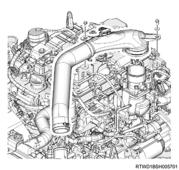
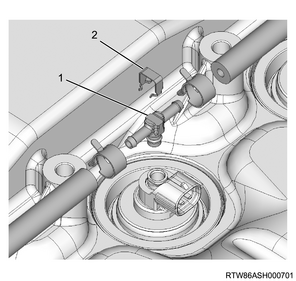

Timing chain removal (4JJ1)
1. Battery ground cable disconnect
1. Open the engine hood assembly.
2. Disconnect the battery ground cable from the battery.
Caution
- Do not disconnect within 1 minute after turning OFF the ignition switch.
2. Crankshaft adjustment
1. Align the No.1 cylinder to compression top dead center.
Note
- Turn the crankshaft in the forward direction (clockwise) to align the 1st cylinder piston to compression top dead center.

- Top dead center alignment mark on the gear case cover
- Top dead center alignment mark on the crank pulley
3. Engine cover removal
1. Remove the engine cover from the engine.

- Engine cover
4. Intake air duct removal
1. Remove the intake air duct from the turbocharger and the intercooler.
Note
- Remove the part together with the intake hose.

5. Boost pressure sensor disconnect
1. Disconnect the connector from the boost pressure sensor.

6. Intake air duct removal
1. Remove the intake air duct from the intake throttle valve and the intercooler.
Note
- Remove the part together with the intake hose.

7. A/C compressor drive belt removal
1. Remove the A/C compressor drive belt from the pulley.

- A/C compressor drive belt
8. Bracket removal
1. Disconnect the vacuum hose from the turbocharger control solenoid.
2. Disconnect the connector from the turbocharger control solenoid.
3. Remove the bracket from the cylinder head cover.
Note
- Remove as a set with the turbocharger control solenoid.

9. Vacuum pipe removal
1. Remove the vacuum pipe from the cylinder head cover.

10. Injector disconnect
1. Disconnect the connector from the injector.
11. Fuel leak-off hose removal
1. Remove the fuel leak-off hose from the leak-off pipe.

- Fuel leak-off hose
- Injector connector
Caution
- Do not reuse the clip of the fuel leak-off hose.
2. Remove the leak-off pipe from the injector.

- Injector leak-off pipe
- Clip
Caution
- Do not reuse the leak-off pipe and the clip.
12. Blow-by hose disconnect
1. Disconnect the blow-by hose from the cylinder head cover.
13. Cylinder head cover removal
1. Disconnect the harness clip from the cylinder head cover.

2. Remove the cylinder head cover from the cylinder head.

14. Noise cover removal
1. Remove the noise cover from the timing chain lower cover.

15. Timing chain lower cover removal
1. Remove the timing chain lower cover from the gear case cover.

16. CMP sensor disconnect
1. Disconnect the connector from the CMP sensor.

- CMP sensor
17. Timing chain upper cover removal
1. Remove the timing chain upper cover from the cylinder head.

- Timing chain upper cover
18. Timing chain tensioner removal
1. Remove the oil pipe from the timing chain tensioner.
2. Remove the timing chain tensioner from the cylinder head.

- Oil pipe
- Timing chain tensioner
- Gasket
19. Timing chain lever pivot removal
1. Remove the timing chain lever pivot from the timing chain tension lever.

20. Timing chain removal
1. Remove the sprocket from the idle gear D.

2. Remove the timing chain from the cylinder head.
Note
- Remove the timing chain and sprocket as a set from the lower sprocket.